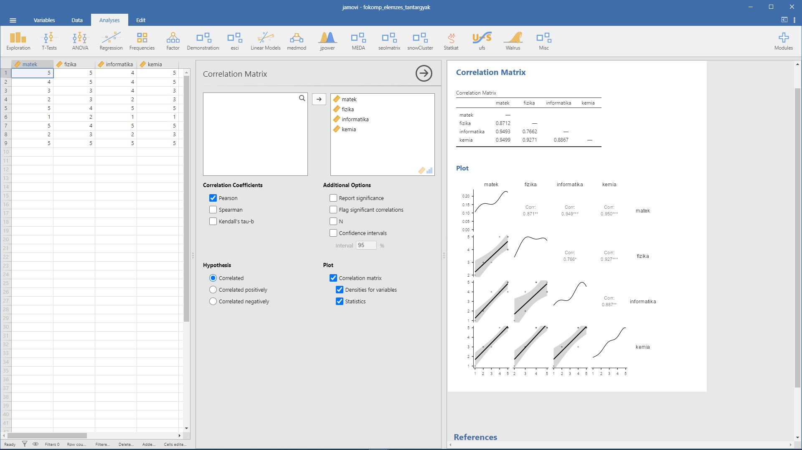

2 Főkomponens elemzés
A főkomponens elemzés a legegyszerűbb többváltozós statisztikai eljárások egyike. Olyan eljárás, amely az egy jelenségre vonatkozó méréseket úgy „összegzi”, hogy közben az óhatatlanul fellépő információ veszteséget a lehető legkisebb mértékűre csökkenti. {} A módszer alapgondolata az, hogy vegyünk \(p\) változót: \(X_1,X_2,\dots,X_p\), majd keressük meg ezek kombinációit, hogy ezáltal \(Z_1,Z_2,..,Z_p\)-vel jelölt indexeket kaphassunk, melyek egymással nem korrelálnak, továbbá \(var(Z_1 )\geq var(Z_2 )\geq \dots \geq var(Z_p)\), ahol \(var(Z_i)\) a \(Z_i\) komponens varianciáját jelöli.
A korreláció hiánya a \(Z_i\)-kben hasznos tulajdonság, ugyanis azt jelenti, hogy az indexek az adatok különböző „dimenzióit” mérik.
A \(Z_i\)-t főkomponensnek nevezzük. Amikor főkomponens-analízist végzünk, mindig abban bízunk, hogy a legtöbb index varianciája elhanyagolhatóan kicsi. Ezáltal az adatok varianciája adekvátan leírható néhány olyan \(Z_i\) változóval, melyek varianciája nem elhanyagolható.
A főkomponens analízis működéséhez szükséges, hogy az eredeti \(X_1,X_2,\dots,X_p\) változók korreláljanak egymással (akár pozitív, akár negatív irányban), ekkor elképzelhető az az eset, hogy 20-30 eredeti változót adekvátan reprezentálhat 2-3 főkomponens. Ha pedig ez teljesül, akkor a fontosabb főkomponensek (melyek varianciája elég nagy) lesznek csupán érdekesek, hiszen ezek fogják az adatok „dimenzióit” mérni. Természetesen nagyon fontos azt is tudnunk, hogy rengeteg eredeti változónk van, és legtöbbjük ugyanazt, vagy legalábbis hasonló dolgokat mér.
2.1 A főkomponens elemzés menete
Az eredeti \(X_1,X_2,\dots,X_p\) változókból a \(Z_i=a_i1 X_1+ a_i2 X_2+\dots + a_ip X_p\) lineáris kombinációk segítségével kapjuk meg a főkomponenseket, azzal feltétellel, hogy \(a_{i1}^2+a_{i2}^2+\dots+a_{ip}^2=1\), és az egymás után létrejövő \(Z_1,Z_2,…,Z_p\) főkomponensek nem korrelálnak egymással.
Gyakran az \(X_1,X_2,\dots,X_p\) változó standardizált értékeiből indulunk ki, hogy a változók arányosan fejtsék ki hatásukat a főkomponensekre. A jamovi is így végzi az elemzést. Ekkor a változok átlaga nulla, szórása és variancia pedig 1 lesz.
A részletek ismertetése nélkül a keresett \(a_{i1},a_{i2},\dots,a_{ip}\) együtthatók megtalálása egy sajátérték-sajátvektor keresési feladat az eredeti \(X_1,X_2,\dots,X_p\) változók korrelációs mátrixában. A megtalált \(p\) darab sajátérték $_1_2_p>0 $sorrendjét feltételezve, \(\lambda_i\) az \(i.\) főkomponens varianciáját adja \((\lambda_i=var(Z_i))\), és a megtalált \(p\) darab sajátvektorból az \(i.\) egyes elemei lesznek a \(Z_i=a_{i1} X_1+ a_{i2} X_2+\dots+ a_{ip} X_p\) főkomponens \(a_{i1},a_{i2},\dots,a_{ip}\) együtthatói.
Fontos összefüggés, hogy a főkomponensek (\(Z_i\)-k) varianciájának az összege egyenlő az eredeti standardizált változók (\(X_i\)-k) varianciájának összegével, azaz \(\lambda_1+\lambda_2+\dots+\lambda_p=1+1+\dots+1=p.\)
2.2 A főkomponens elemzés alkalmazási feltételei
- A főkomponens elemzés során általában 4-5-ször (egyes szerzőknél 10-szer) nagyobb a mintaelemszám a vizsgált változók számánál.
- A faktoranalízis feltétele, hogy egymással korreláló változókból induljunk ki. A Bartlett-féle szferikus próba nullhipotézise, hogy a változók korrelálatlanok (vagyis a korrelációs mátrixnak a főátlón kívüli elemei csak véletlenül térnek el a nullától). A szignifikáns p-érték a kedvező a főkomponens elemzés számára. (Megjegyezzük, hogy a túlságosan magas egyirányú korrelációk sem jók, ugyanis ez azt okozhatja, hogy a főkomponens elemzésnek nem lesz megoldása, ugyanis minden változó egy faktorba kerül.)
- Az MSA (Measure of Sampling Adequecy) az egyes változók esetében mutatja meg, hogy mennyire van szoros kapcsolatban a többi változóval. Érdemes a 0,5 alatti MSA értékkel rendelkező változókat kizárni az elemzésből. Értéke 0 és 1 közötti lehet.
- A Kaiser-Meyer-Olkin- (KMO) kritérium az MSA értékek átlaga. Míg az MSA érték az egyes változókra vonatkozik, a KMO az összes változóra egyidejűleg. A KMO mutatószám jelentését a következőképpen ítélhetjük meg:
- KMO ≥ 0,9 kiváló
- KMO ≥ 0,8 nagyon jó
- KMO ≥ 0,7 megfelelő
- KMO ≥ 0,6 közepes
- KMO ≥ 0,5 gyenge
- KMO < 0,5 elfogadhatatlan.
2.3 A főkomponensek forgatása (rotáció)
A faktorkiválasztás (extrakció) során az elemzés elsődleges célja, hogy maximalizálja a főkomponensek varianciáját, amely eredményeként megkapjuk a rotálatlan faktorsúly-mátrixot. A faktorsúly az eredeti változó és az adott faktor közötti korrelációt mutatja, amelynek értéke a korrelációs együtthatókhoz hasonlóan -1 és 1 között változhat.
A faktorkiválasztás során azonban előfordulhat, hogy olyan változók fognak korrelálni egy adott faktorral, amelyeknek semmi közük egymáshoz, ezáltal lehetetlenné téve az értelmezést. Ezen a problémán segít a forgatás, vagy más néven rotáció. A faktor-rotáció azt jelenti, hogy a faktorok tengelyeit elforgatjuk úgy, hogy egyszerűbb és értelmezhetőbb faktormegoldáshoz vezessen.
A rotáció (forgatás) során nem változnak sem a kommunalitás, sem pedig az összes magyarázott variancia, csak a faktorok sajátértékei/magyarázott varianciái módosulnak.
A rotáláson belül két típust különböztetünk meg: a derékszögű (ortogonális) (Varimax, Equimax, Quartimax) és a hegyesszögű (nem ortogonális) (Direct Oblimin, Promax) forgatási módszereket.
A derékszögű esetében a tengelyek merőlegesen állnak egymásra, ezáltal a faktorok nem korrelálnak egymással, míg a hegyesszögű esetében ezek tetszőleges szöget zárnak be egymással, vagyis a faktorok korrelálni fognak egymással.
2.4 1. Példa
A példa Münnich és mtsai. (2006) 2.3.1. alfejezet alapján készült és a Kapcsolódó jamovi állomány: fokomp_elemzes_tantargyak.omv.
1. Határozzuk meg a korrelációs mátrixot (jamovi-ban: Regression / Correlation matrix)

A korrelációs mátrix adatai arra utalnak, hogy szoros kapcsolat van a változók között. A korrelációs értékek nullánál nagyobbak, ami azonos irányú tendenciákra utal. E két mátrix is alátámasztja a feltételezésünket, hogy a változók szorosan együtt változnak.
2. Ellenőrizzük le az adatok alkalmasságát (jamovi-ban: Factor / Principal Component Analysis)
A változóink eleget tesznek a Bartlett-féle szferikus próbának, a korrelációs mátrix nem egységmátrix \((p<0,001)\), az MSA értékek is nagyobban \(0,5\)-nél és a KMO érték is megfelelő.

3. Határozzuk meg a komponensek számát
Elvileg annyi főkomponenst lehet kiszámolni, ahány változónk van, a célunk azonban a komponensek számának minimalizálása.
Több eljárás létezik a főkomponensek számának meghatározására:
- Horn-féle párhuzamos analízis (jamovi-ban:
Based on parallel analysis): modern eljárás, amely szimuláció segítségével állapítja meg a főkomponensek számát (Horn, 1965). - A priori meghatározás (jamovi-ban:
Fixed number): korábbi ismerete alapján megadjuk a főkomponensek számát. - Sajátértéken alapuló megoldás (jamovi-ban:
Based on eigenvalue): tipikusan csak az 1-nél nagyobb sajátértékű faktorokat tartjuk bent a modellben. Az 1-nél kisebb varianciájú faktorok ugyanis nem jobbak mint az eredeti standardizált változók - Sajátértékábrán (scree-plot, kőtörmelék ábra) alapuló meghatározás (jamovi-ban:
Scree plot): a sajátérték ábra a sajátértékek ábrázolása a főkomponensek sorrendjében. Az ábra formája alapján lehet következtetni a főkomponensek számára: ahol a görbe meredekségében van egy határozott törés, meredekebb rész után laposabb jön. Ahol tehát a görbe laposodása elkezdődik, az a figyelembe vett főkomponensek megfelelő száma. - Magyarázott varianciahányadon alapuló meghatározás (jamovi-ban:
Component summary): ekkor az előállított főkomponensek számát úgy határozzuk meg, hogy a főkomponensek által magyarázott variancia kumulált százalékos értéke elérjen egy megfelelő szintet. A megfelelő szint (60%-95%-ig) a probléma jellegétől függ.
A Horn-féle párhuzamos elemzés 1 főkomponenst javasol.
4. Válasszunk forgatást (jamovi-ban: Rotation)
A jamovi alapértelmezés szerint a Varimax forgatást ajánlja, amely derékszögű koordinátatengelyeket eredményez és a legtöbb esetben ez a megfelelő választás. Lehetőségünk van ezen módosítani. Az összes lehetőség:
- None – rotálatlan elemzés
- Varimax
- Qartimax
- Promax
- Oblimin
- Simplimax
Mivel egyetlen főkomponensünk van, így nem változtatunk az alapértelmezett Varimax beállításon.
5. A főkomponens elemzés eredménye
Komponens mátrix (jamoviban: Component loadings)
A főkomponens elemzés eredménye a komponens mátrix (faktormátrix), amelynek soraiban az eredeti változók, oszlopaiban a kinyert főkomponensek vannak. A cellákban a komponens súlyok (faktorsúlyok) szerepelnek, amelyek a főkomponens és a változó közötti korrelációt jelentik. Ezek egyben a főkomponensek azon együtthatói, amelyekkel a standardizált változó a főkomponensekkel kifejezhető.
A magas abszolút értékű faktorsúly azt jelzi, hogy komponens és a változó szorosan összefügg.
A változókat tartalmazó sorok rendezhetők a faktorsúlyok csökkenő sorrendjében (jamovi-ban: Sort loading by size)
Az adott értéknél kisebb faktorsúlyok elrejthetők a táblázatban (jamoviban: Hide loadings below)
A Uniqueness oszlopban az egyes változók „egyediségét” is láthatjuk. Az egyediség a variancia azon aránya, amely „egyedi” a változóra nézve, és nem magyarázható a komponensekkel. Vegyük figyelembe, hogy minél nagyobb az „egyediség”, annál kisebb a változó relevanciája/hozzájárulása a modellben.
A kezdő sajátértékek (jamovi-ban: Initial eigenvalues)
A kezdő sajátértékek táblázat a sajátértékeket adja meg. A komponensek sajátértékei csökkenő nagyságúak, ahogy az 1. komponenstől a 4. komponensig haladunk. A komponens sajátértéke kifejezi a komponens által magyarázott teljes varianciát. A 4 komponens összvarianciája pontosan 4. A további két oszlopban ez alapján számoljuk a százalékos és a kummulált százalékos varianciát.
A komponensek összegzése (jamovi-ban: Component summary)
A komponensek összegzése táblázat tartalmazza a megtartott komponenseket, a magyarázott varianciát, illetve utóbbit százalékosan is kifejezve. Vegyük észre, hogy ez a sor teljesen megegyezik a kezdő sajátértékek táblázat első sorával. Az SS Loadings felirat magyarázata, hogy magyarázott variancia a komponenshez tartozó faktorsúlyok négyzetösszege (sum of square).

6. Főkomponens értékek kiszámítása
A főkomponens elemzés célja az eredeti változók csökkentése. A főkomponens(ek) az eredeti változók lineáris kombinációjával kifejezhetők. Ez(ek) a főkomponens értékek (jamovi-ban: Component score) az adatbázisban is rögzíthetők, és további elemzések kiindulópontjai lehetnek.

Sikerült tehát az érdemjegyeket egyetlen mérőszámmal kifejezni, a fenti főkomponens érték az, amely a lehető legjobban magában foglalja az egyes tantárgyakból szerzett jegyeket és ezáltal a reál tantárgyak iránti fogékonyság mérőszáma lehet. A legjobban a kilencedik személy teljesít a reál tárgyakból, legrosszabbul pedig a hatodik. Ezek az értékek standardizáltak, vagyis 0 átlagúak és 1 szórásúak.